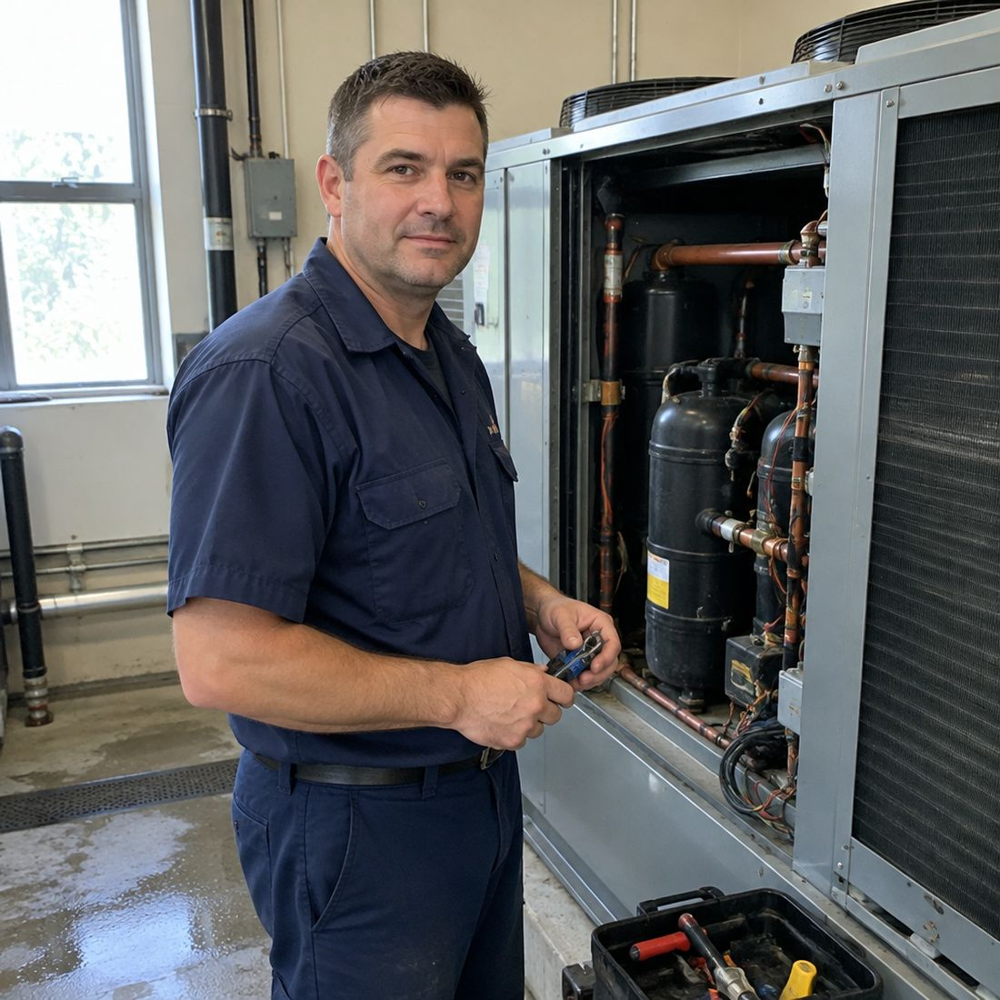

Сервис, который
объясняет
ИП Тручок А.С. Профильный специалист по кондиционированию и холодильному оборудованию, опыт 15 лет. Гомель и Гомельская область.
15 лет с кондиционерами и холодом
За это время прошло всё: от бытовых сплит-систем в квартирах до VRF в бизнес-центрах и чиллеров на производстве. Опыт в том, чтобы по симптомам быстро сузить круг причин и не менять узлы «по очереди», пока не угадаем.
Работаем с физическими и юридическими лицами. Для организаций — счёт, акт, безналичный расчёт. Для частных клиентов — понятное объяснение, что случилось и как этого избежать в следующий раз.
- Бытовые кондиционеры и мульти-сплит системы
- Фанкойлы, чиллеры, VRF/VRV
- Холодильные камеры, морозильники, витрины
- Пусконаладка холодильного оборудования

ИП Тручок А.С. · Гомель
Как мы работаем
Без обещаний «сделать за копейки» и без ремонта ради чека.
Диагностика, а не догадки
Замеры давления, токов и температур. Причина называется до начала работ, а не после.
Честная стоимость
Точную сумму называем после диагностики. Если ремонт нецелесообразен, скажем прямо.
Профильный инструмент
Манометрическая станция, вакуумный насос, течеискатель, токовые клещи, азот для опрессовки.
Ответственность
Контрольные замеры после ремонта и акт выполненных работ для организаций.
Чем работаем
Инструмент под бытовые и коммерческие системы.
- Манометрическая станция
- Вакуумный насос
- Течеискатель
- Токовые клещи и мультиметр
- Азот для опрессовки
- Весы для заправки по весу
- Промывочное оборудование
- Пылесборник для мойки
Нужен мастер, который объяснит? Звоните
Расскажите, что происходит с кондиционером. Подскажем по телефону, что вероятнее всего, и договоримся о выезде.